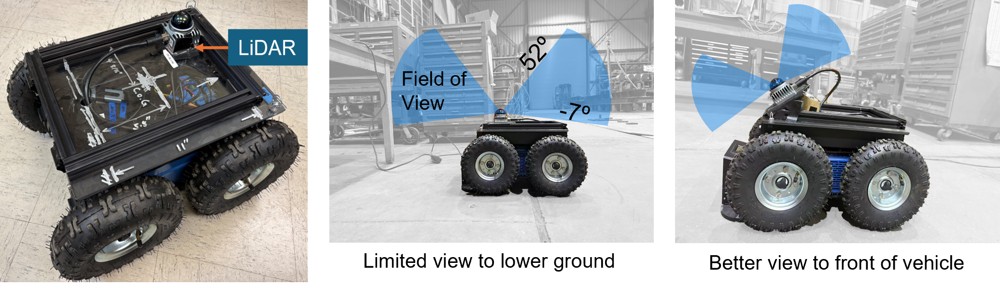
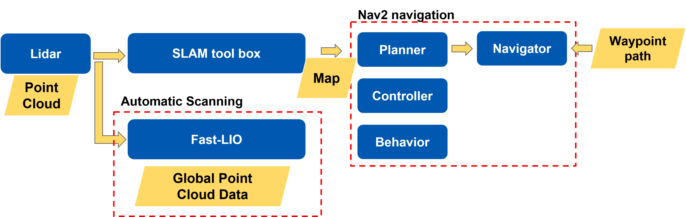
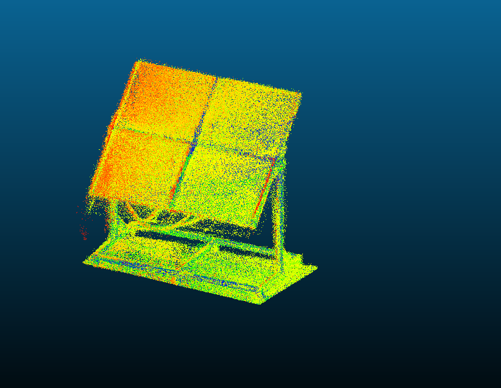
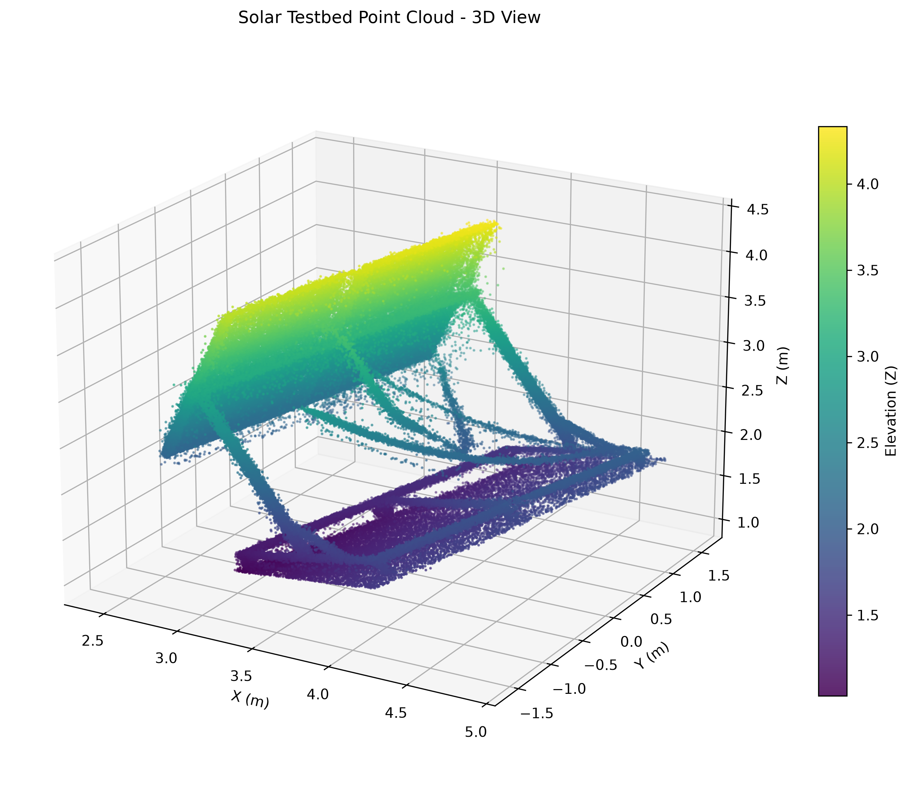
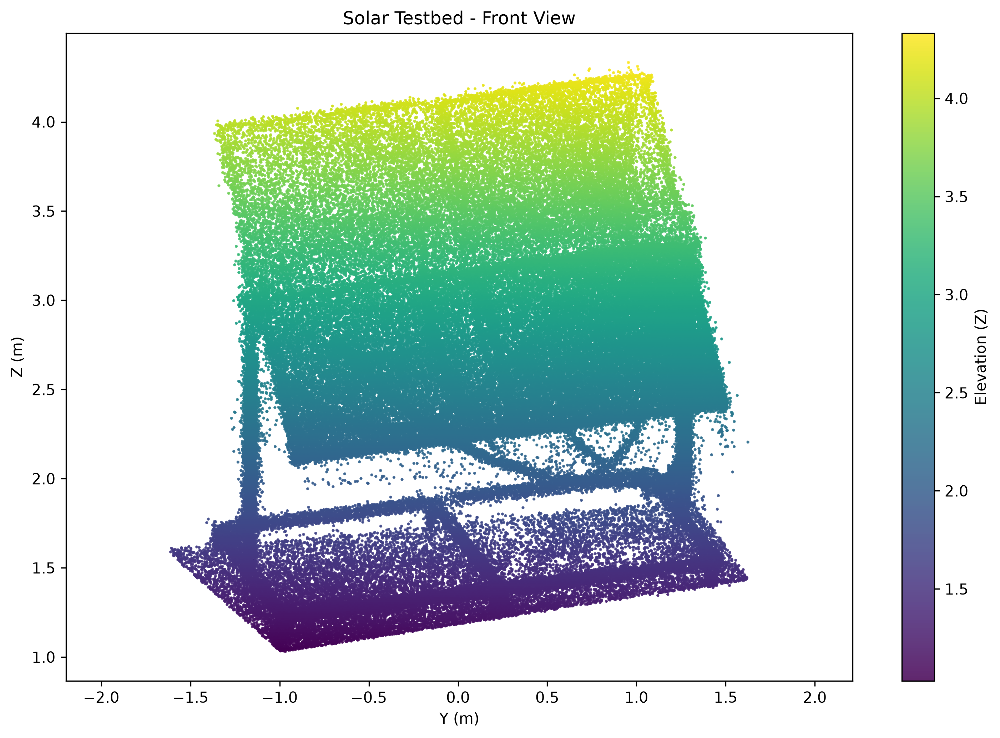
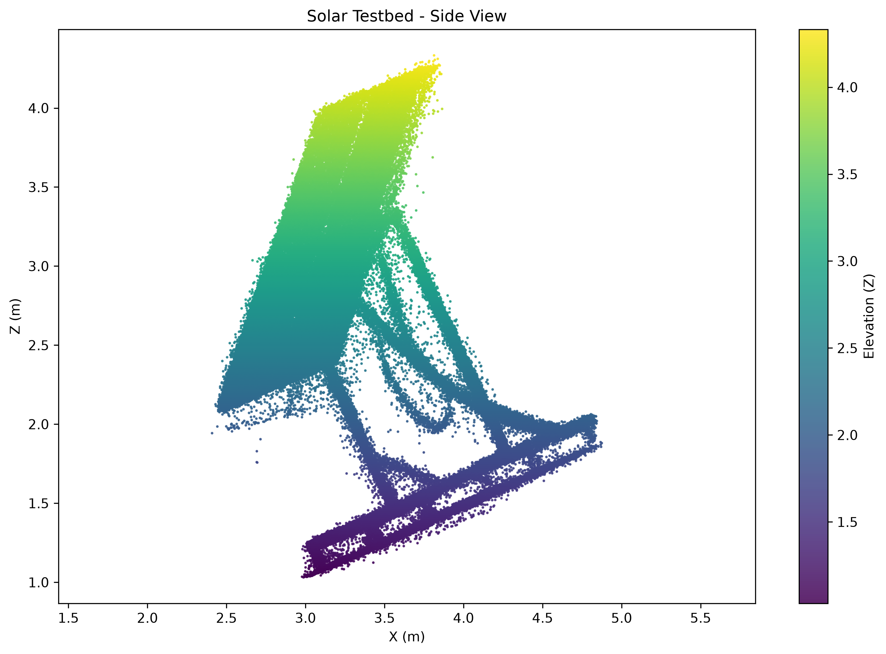
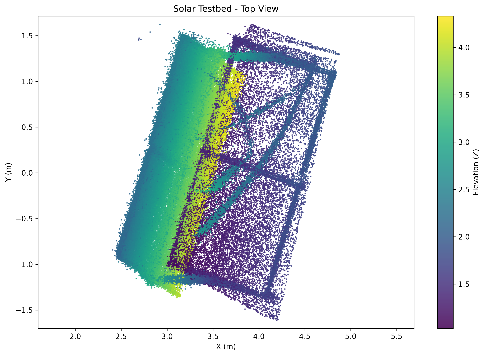

Ground mobility
A four-wheel-drive unmanned ground vehicle moves through array rows for close-range inspection.
This page keeps all rover, LiDAR, SLAM, point-cloud, and geometric-inspection material together.


A four-wheel-drive unmanned ground vehicle moves through array rows for close-range inspection.
LiDAR sensing and SLAM-based mapping produce point clouds for repeatable geometry checks.
An articulated sensor mount improves viewpoint flexibility and reduces occlusion.


The rover-mounted LiDAR collected raw spatial data from the solar testbed and its surrounding environment. The raw dataset initially included background objects, isolated noise, and points beyond the testbed itself. After registering the scans, removing outliers, cleaning the surrounding data, and cropping the dataset to the area of interest, we obtained the final point cloud of the photovoltaic modules and supporting structure.
This cleaned point cloud provides a geometric representation of the testbed and establishes a baseline for future repeat inspections, deformation assessment, and scan-to-scan change detection.

The cleaned point cloud was visualized from multiple directions to better examine the geometry of the testbed. The three-dimensional and orthographic views provide complementary perspectives for assessing panel inclination, structural alignment, support geometry, clearances, and the overall spatial configuration of the system.



